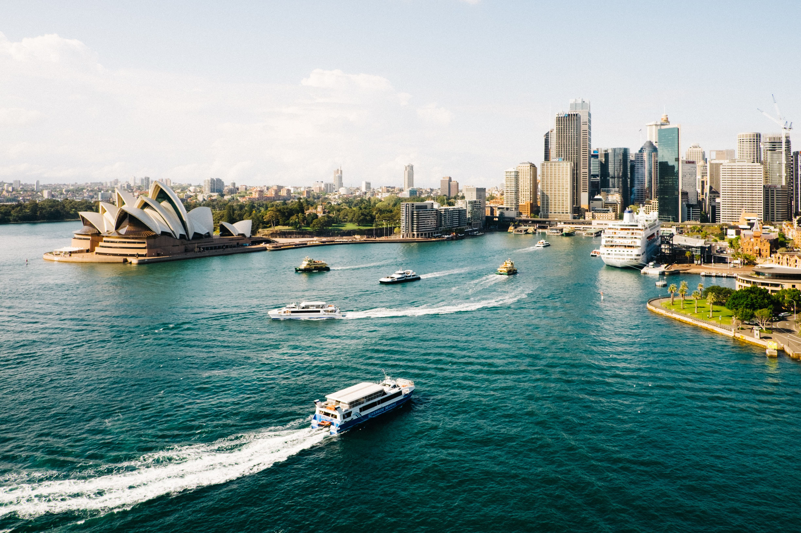

Er det verdens minste kontinent eller verdens aller største øy? Spiller ingen rolle – Australia er et av de mest kontrastrike og fascinerende landene i verden, med knusktørre ørkener, grønne og fuktige regnskoger, spennende storbyer og en helt unik dyreverden.
